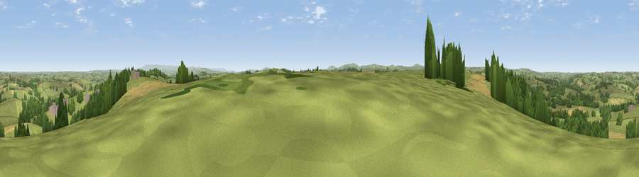

Viewpoint near Egloskerry
#14794 in England · top 25% of its area beats it · near Egloskerry · access?Where it is
The exact computed spot (SX 29125 86025). Click the marker for map links.
Public access: no public right of way or access land is recorded at this exact spot — it may be on private land. Computed from Natural England's CRoW access layer and OpenStreetMap rights of way — not the legal definitive map. Always verify locally.
The view, rendered

A 360° render of this exact spot computed from the terrain model, tree cover and land cover — summer colours, afternoon light, calibrated against photographs of famous viewpoints. Real trees, hedges and buildings will differ in detail.
The panorama
Grey silhouette: terrain skyline in each direction (720 bearings, Earth curvature and refraction included). Dashed green: skyline with trees (+15 m) and buildings (+8 m) as obstacles. Blue strip: how far the ground is visible on each bearing.
Where the view opens
Wedge length = distance to the farthest visible ground on that bearing (vegetation-aware). Rings at 10, 25 and 50 km.
What fills the view
71% grassland · 16% woodland · 11% cropland · 2% built-up
Angular shares of the visible panorama (visual magnitude), not map area. Landscape diversity 0.37 (0–1 Shannon).
Key numbers
More beautiful places nearby
The staircase of upgrades: each row has a higher view potential than everything closer. Driving times are estimates from straight-line distance, calibrated against real road routing — check an actual route before setting out.
| Place | Direction | Drive | Score |
|---|---|---|---|
| Viewpoint near Tregeare | W · 4 km | ~9 min | 59.9 |
| Larrick Hill | SSE · 8 km | ~16 min | 60.1 |
| Viewpoint near North Hill | SSW · 9 km | ~18 min | 68.6 |
| Viewpoint near Warbstow | WNW · 10 km | ~20 min | 71.2 |
| Viewpoint near Henwood | SSW · 12 km | ~22 min | 76.2 |
| Viewpoint near Henwood | SSW · 14 km | ~25 min | 77.3 |
| Caradon Hill | S · 15 km | ~27 min | 78.5 |
| Kit Hill | SSE · 17 km | ~30 min | 80.3 |
50.64878, -4.41840 · source: screening · position refined by local search. Computed location — check access rights before visiting.